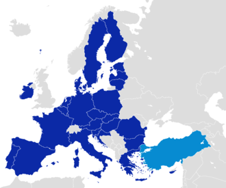
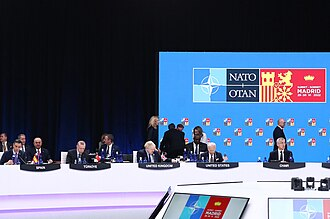
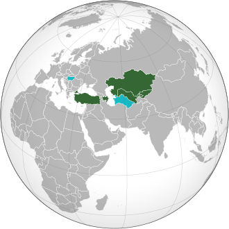

Contact information
In line with its traditional Western orientation, relations with Europe have always been a central part of Turkish foreign policy. Turkey became one of the early members of the Council of Europe in 1950. Turkey applied for full membership of the EEC in 1987, joined the European Union Customs Union in 1995 and started accession negotiations with the European Union in 2005. In a non-binding vote on 13 March 2019, the European Parliament called on the EU governments to suspend EU accession talks with Turkey, citing violations of human rights and the rule of law; but the negotiations, effectively on hold since 2018, remain active as of 2023.
The other defining aspect of Turkey's foreign policy has been the country's long-standing strategic alliance with the United States. The Truman Doctrine in 1947 enunciated American intentions to guarantee the security of Turkey and Greece during the Cold War, and resulted in large-scale U.S. military and economic support. In 1948 both countries were included in the Marshall Plan and the OEEC for rebuilding European economies.
The common threat posed by the Soviet Union during the Cold War led to Turkey's membership of NATO in 1952, ensuring close bilateral relations with the US. Subsequently, Turkey benefited from the United States' political, economic and diplomatic support, including in key issues such as the country's bid to join the European Union. In the post–Cold War environment, Turkey's geostrategic importance shifted towards its proximity to the Middle East, the Caucasus and the Balkans.
The independence of the Turkic states of the Soviet Union in 1991, with which Turkey shares a common cultural, historic and linguistic heritage, allowed Turkey to extend its economic and political relations deep into Central Asia. The International Organization of Turkic Culture (TURKSOY) was established in 1993, and the Organization of Turkic States (OTS) was established in 2009.
Under the AKP government, Turkey's economy has grown rapidly and the country's influence has grown in the Middle East based on a strategic depth doctrine, also called Neo-Ottomanism.
Following the Arab Spring in December 2010, the choices made by the government for supporting certain political opposition groups in the affected countries have led to tensions with some Arab states, such as Turkey's neighbor Syria since the start of the Syrian civil war, and Egypt after the ousting of President Mohamed Morsi. As of 2022, Turkey does not have an ambassador in either Syria or Egypt, but relations with both countries have started to improve.
Diplomatic relations with Israel were also severed after the Gaza flotilla raid in 2010 but were normalized following a deal in June 2016. These political rifts have left Turkey with few allies in the East Mediterranean, where large natural gas fields have recently been discovered. There is a dispute over Turkey's maritime boundaries with Greece and Cyprus and drilling rights in the eastern Mediterranean.
After the rapprochement with Russia in 2016, Turkey revised its stance regarding the solution of the conflict in Syria. In January 2018, the Turkish military and the Turkish-backed forces, including the Syrian National Army, began an operation in Syria aimed at ousting U.S.-backed YPG (which Turkey considers to be an offshoot of the outlawed PKK) from the enclave of Afrin. Turkey has also conducted airstrikes in Iraqi Kurdistan which have strained Turkey-Iraq relations as the latter has criticised the strikes for violating its sovereignty and killing civilians,.